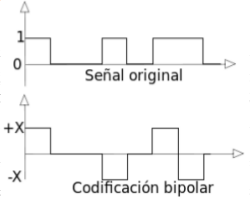

Codificar
Se refiere al proceso de convertir información a un formato adecuado para su transmisión a través de una red. Esto implica transformar los datos en un flujo de bits que se pueda transmitir de manera eficiente y reconstruir de forma fiable en el extremo receptor.
